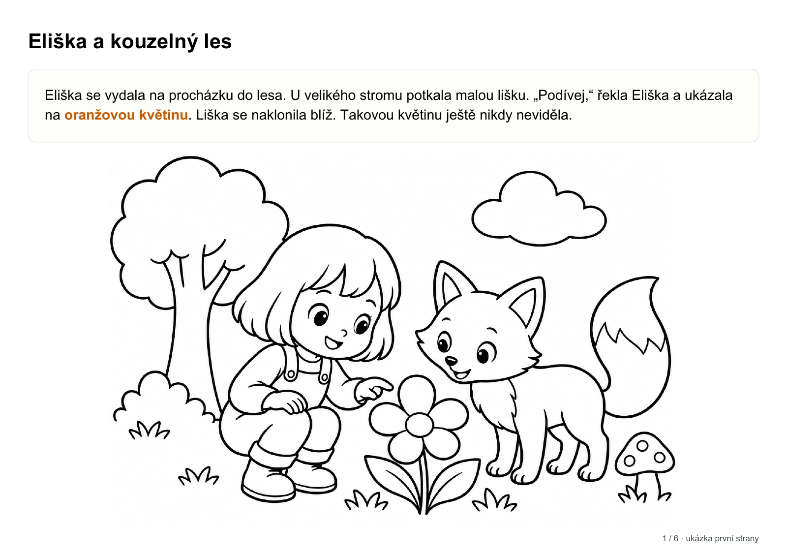

Představte nám hrdinu
Jméno, věk a oblíbené dobrodružství.
Pro osobnější podobu můžete přidat fotku.
PŘÍBĚHOVÉ OMALOVÁNKY NA MÍRU
Vlastní jméno, oblíbený kamarád a příběh, který ještě nikdo nevybarvil. Šest stran pohádky, kterou si vytisknete doma.
Pro děti 3–9 let Bez registrace

Pár údajů od vás, jeden celý příběh pro dítě.
Jméno, věk a oblíbené dobrodružství.
Pro osobnější podobu můžete přidat fotku.
Před platbou ověříme zadání a dostupnost tvorby.
Sešit se šesti omalovánkami stojí 80 Kč.
Stáhnete PDF a vytisknete ho doma.
Další kapitola už bude plná vašich barev.
Takto může vypadat první stránka vlastní pohádky. Krátké české vyprávění a velké plochy, do kterých se vejde dětská fantazie.
První stránka šestistránkového sešitu. Fiktivní postava.
Do lesa, mezi dinosaury, nebo rovnou ke hvězdám.
Má váš malý hrdina jiný sen?
Na deštivé odpoledne, klidné ráno i chvíli před spaním. Pohádka, kterou si přečtete společně. A pokaždé může mít jiné barvy.
Vlastní jméno, oblíbený svět a zvířecí kamarád.
Text i obtížnost obrázků přizpůsobené věku 3–9 let.
Šest navazujících stran v jednom PDF. Tisknete doma.
DALŠÍ PŘÍBĚH MŮŽE BÝT VÁŠ
6 stran · jedno PDF · spousta místa pro barvy